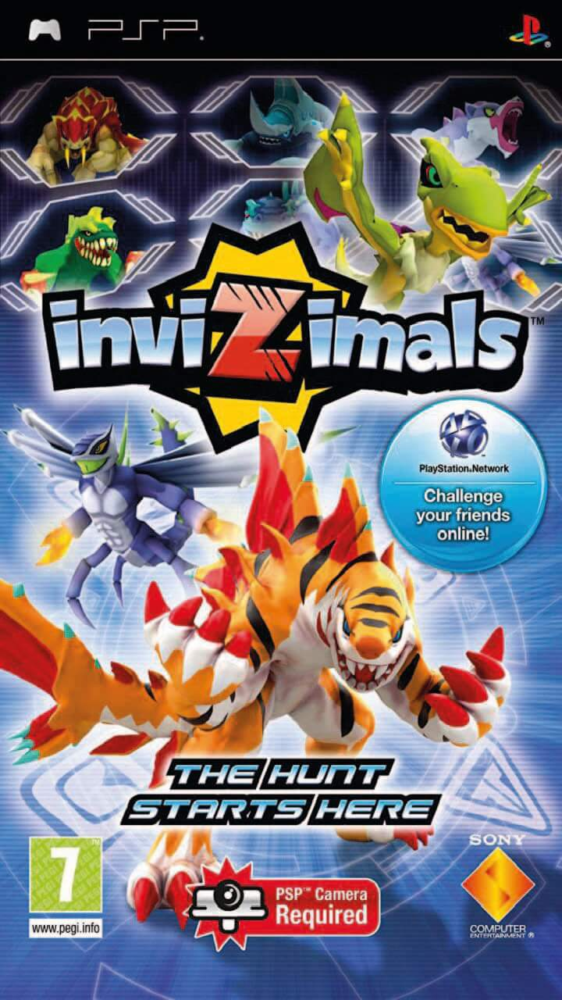
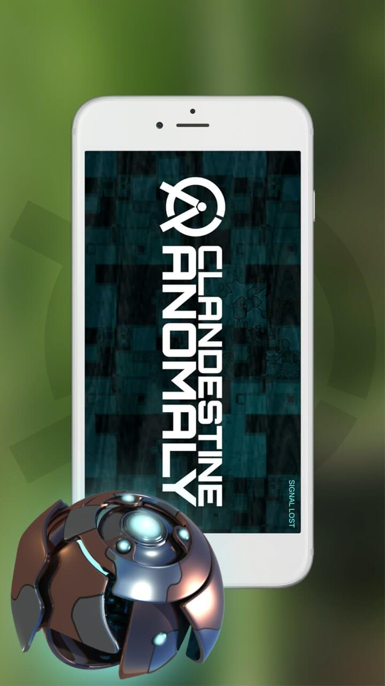

La sursynchronisation et le traffic réseau
Depuis une vingtaine d’années, l’écologie est peu à peu passée au premier plan dans chacune de nos habitudes. Notre utilisation d’internet ne fait pas exception à la règle. Car oui, le fonctionnement du web a un grand impact sur l’environnement ! Chaque interaction faite sur le réseau nécessite l’envoi d’une requête web. L’impact de cette requête varie en fonction du contenu demandé ou envoyé, et de sa taille. Pour un mail sans pièces jointes, on parle seulement de quelques kilo-octets. Cependant, lorsque l’on envoie des images, la taille grandit exponentiellement. Une image en HD (1080 pixels de large) fait en moyenne un méga octet. Cela donne des mails généralement cent fois plus gros avec une simple photo !
Qu’en est-il des jeux en réalité augmentée qui font fureur en ce moment ? Pokémon Go en est un bon exemple. Le concept est assez simple : Les joueurs se servent de leur smartphone pour chasser toutes sortes de créatures, appelées « Pokémons ». C’est assez similaire à celui du jeu Darwin’s Game, évoqué précédemment par notre éditorial.
Exemples de jeux géo-localisés
- 
- 
Les jeux multijoueur : l'envers du décor
Le problème de ce type de jeu est qu’il nécessite de larges quantités de puissance électrique. Le smartphone du joueur reste en plein fonctionnement toute la durée de la session. En parallèle, il échange constamment avec les serveurs du jeu via les données mobiles. Il s’agit de garder le profil du joueur à jour, ainsi que le statut des arènes du monde entier. Pour commencer, la consommation du smartphone de l’utilisateur est problématique. La batterie tient beaucoup moins longtemps et doit être chargée plus souvent. Mais le pire reste la consommation des datacenters, qui doivent tourner en permanence. Leur importante consommation ne se limite pas à leur simple fonctionnement – ils génèrent une chaleur considérable et doivent être refroidis.
On estime que 30 à 60% de l’énergie utilisée par un datacenter part dans son refroidissement.
Cela varie en fonction du climat local, de la technologie utilisée et de l’ancienneté de l’infrastructure.

Le stockage des données en image
Des solutions à trouver à l'avenir
Le refroidissement de cette chaleur entraîne donc des émissions conséquentes de gaz à effet de serre. Celles-ci ont de nombreux effets néfastes sur l’environnement, et notamment sur l’atmosphère. Au vu du développement grandissant d’internet, on estime que les émissions liées aux datacenters augmentent au rythme de 20% de plus par an. La recherche de solutions pour réduire les dépenses d’énergie et les gaz à effet de serre est par conséquent de premier plan ces dix dernières années.